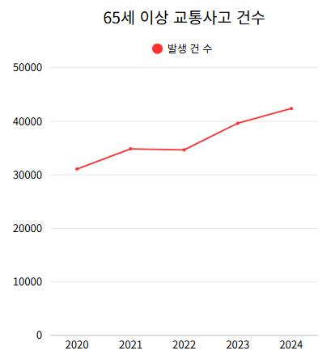
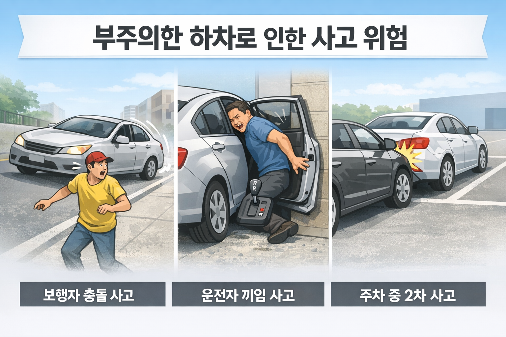
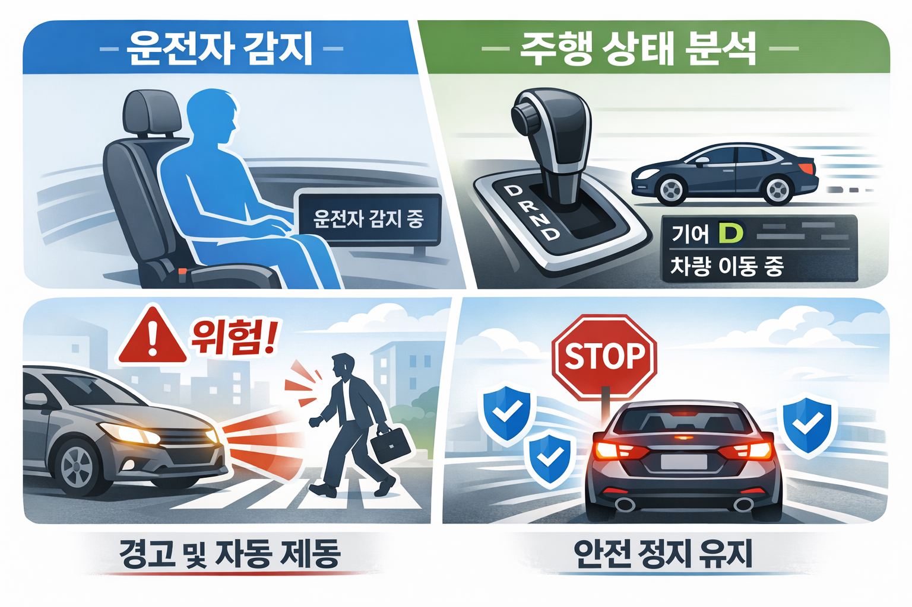
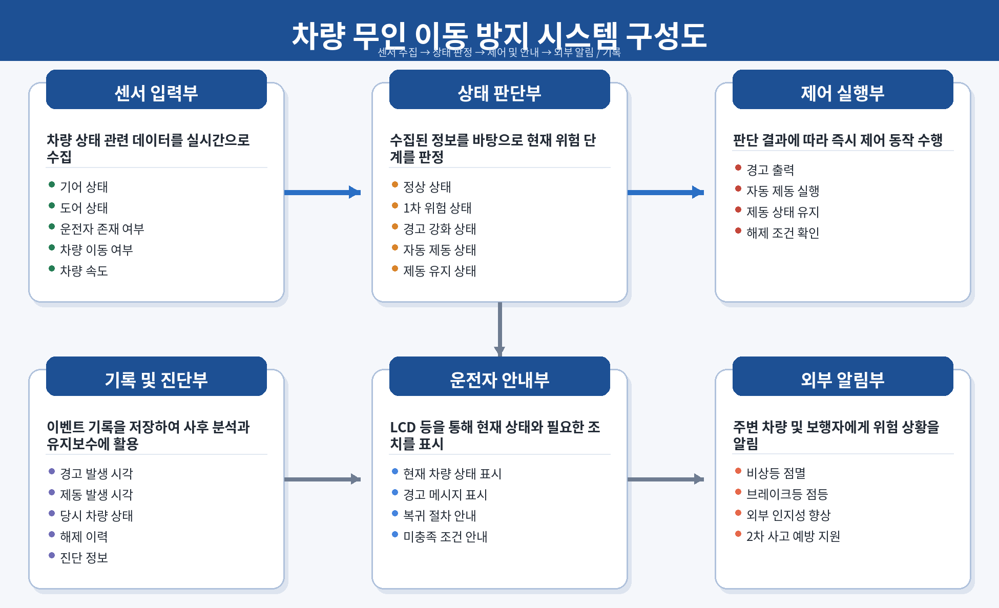

| A | B | C | D | E | F | |
|---|---|---|---|---|---|---|
1 | ||||||
2 | ||||||
3 | ||||||
4 | 시스템 개념 정의서 - VAPS (차량 무인 이동 방지 자동 제어 시스템) | |||||
5 | 대분류 | 소분류 | 내용 | 비고 | ||
6 | 문서 개요 | 목적 | 본 문서는 차량 무인 이동 방지 자동 제어 시스템(VAPS, Vehicle_Anti-rollaway_Protection_System)의 개발 배경, 시스템 개념, 운용 방식 및 요구사항 도출의 기준을 정의하는 것을 목적으로 한다. 본 문서는 이후 사용자 요구사항 및 기능 요구사항 정의, 시스템 설계 및 구현 단계에서 참조되는 상위 기준 문서로 활용된다. | 조장: 김태곤 조원: 국동균, 이승아, 윤한준, 조하빈 | ||
7 | 범위 | 본 시스템은 운전자 부재 상태에서 차량이 비안전 기어 상태(D, R, N)에 놓인 경우 발생할 수 있는 차량 밀림 사고를 예방하기 위한 차량 안전 제어 시스템이다. 주요 적용 범위는 다음과 같다. · 주차 및 정차 상황 · 저속 주행 환경 (10km/h 이하) · 경사로 및 평지 환경 · 운전자 하차 상황 | ||||
8 | 시스템 개념 | 개발 배경 | 최근 자동차 이용 증가와 함께 다양한 형태의 교통사고가 발생하고 있으며, 그 중에서도 운전자 부재 상태에서 차량이 의도치 않게 이동하는 사고가 지속적으로 발생하고 있다. 특히 운전자가 차량을 완전히 정지시키지 않거나, 기어를 D(Drive) 또는 R(Reverse) 상태로 둔 채 하차하는 경우 차량이 서서히 이동하면서 보행자 충돌, 차량 손상, 운전자 끼임 사고 등으로 이어지는 사례[1]가 보고되고 있다. 이러한 사고는 단순한 차량 결함보다는 운전자의 부주의 또는 운전 미숙에서 비롯되는 경우가 많으며, 특히 고령 운전자 비율 증가와 맞물려 사고 위험이 더욱 높아지고 있다. 실제로 국내외 통계에 따르면, 고령 운전자의 교통사고 비율은 지속적으로 증가하고 있으며, 이는 반응 속도 저하, 판단 능력 감소, 조작 실수 등의 요인과 밀접하게 관련되어 있다. 특히 최근에는 고령 운전자 수 자체가 급격히 증가[2]하면서, 단순 접촉 사고뿐 아니라 주차 중 차량 밀림, 기어 조작 실수로 인한 사고 등과 같은 저속 환경에서의 사고 또한 함께 증가하는 추세이다. 이러한 사고는 차량 속도가 빠르지 않더라도, 주변 보행자나 운전자 본인에게 심각한 위험을 초래할 수 있다는 점에서 문제가 된다. 현재 일부 차량에는 주차 보조 시스템이나 전자식 브레이크 등이 적용되어 있으나, 대부분의 시스템은 운전자의 명확한 조작을 전제로 동작하며, 운전자 부재 상황 자체를 능동적으로 제어하는 기능은 제한적이다. 즉, 운전자가 차량에서 내린 이후 발생하는 위험 상황에 대해서는 충분한 대응이 이루어지지 않고 있다.[3] 따라서, 운전자의 실수를 보완하고, 특히 고령 운전자 및 운전 미숙 사용자 환경에서도 안전성을 확보할 수 있는 능동적 차량 제어 시스템의 필요성이 증가하고 있다. | [1] 교통사고 발생 후진기어 둔 채 트렁크 열다 참변…20대 여성 차·벽 사이 끼여 사망 [출처:중앙일보] 주차장서 후진기어 상태로 내린 40대 운전자, 차에 깔려 숨져[출처:연합뉴스] '후진 기어' 상태로 짐 내리다가...자기 차에 깔려 숨진 50대 운전자[출처:jtbc news] [단독] “꽈배기 사려고 내렸는데”...‘기어 D’에 둔 차, 50대 부부 덮쳤다[출처:경기일보] [3] 차량 이탈 후 사고(rollaway 사고) 실제로 지속 발생 차량이 운전자 없이 움직이는 rollaway 사고로 연간 약 140~150명 사망 차량 이탈 사고는 비탑승자(보행자 등) 사망의 약 17% 차지 rollaway 사고의 40% 이상이 주차 브레이크 미작동 등 운전자 실수 | [2] 고령 운전자 사고 비율 [출처:TAAS 교통사고분석시스템] | |
9 |  | |||||
10 | 개발 필요성 | 운전자 부재 상태에서 발생하는 차량 이동 사고는 대부분 단순한 실수에서 시작되지만, 그 결과는 심각한 인명 피해로 이어질 수 있다. 특히 차량이 D(Drive)단 또는 R(Reverse)단 상태에서 운전자가 하차할 경우, 차량이 의도치 않게 이동하면서 운전자가 차량과 주변 구조물 사이에 끼이거나, 보행자와 충돌하는 사고가 발생할 수 있다. 이러한 문제는 기존 차량 시스템만으로는 충분히 해결하기 어려운 구조적 한계를 지닌다. 현재 차량에 적용되는 대부분의 안전 기능은 충돌 이후 피해를 줄이는 데 중점을 두고 있으며, 운전자 부재 상황에서 발생할 수 있는 위험을 사전에 감지하고 차단하는 기능은 상대적으로 부족한 실정이다. 또한 고령 운전자 증가 추세는 이러한 문제를 더욱 심화시키고 있다. 고령 운전자는 반응 속도 저하, 판단 능력 감소, 조작 실수 등의 이유로 차량 조작 과정에서 오류를 범할 가능성이 상대적으로 높으며, 특히 기어 상태 확인이나 브레이크 조작과 같은 기본적인 운전 행위에서도 실수가 발생할 수 있다. 이러한 상황에서 이를 보완할 수 있는 시스템적 대응이 마련되지 않는다면, 동일한 유형의 사고는 반복적으로 발생할 가능성이 크다. 실제로 NHTSA는 FMVSS No.114를 통해 주차 차량의 rollaway 사고를 줄여야 할 주요 안전 문제로 보고 있으며, 운전석 문이 열린 상태에서 키가 차량 제어가 가능한 위치에 남아 있는 경우에는 경고가 반드시 작동해야 한다고 해석하고 있다.[1] 따라서 본 프로젝트는 운전자 부재 상태를 실시간으로 감지하고, 차량의 기어 상태 및 이동 여부를 종합적으로 판단하여 위험 상황 발생 시 경고 및 자동 제어를 수행함으로써, 운전자 의존도를 낮추고 시스템 중심의 안전성을 확보하는 것을 목표로 한다. 이는 단순한 편의 기능을 넘어, 사고 발생 이후의 대응이 아닌 사고 발생 이전의 위험을 차단하는 능동적 안전 시스템이라는 점에서 의미가 있다. 나아가 향후 차량 안전 기술의 발전 방향과도 부합하는 실질적인 예방 중심 기술로 볼 수 있다. | [1] 개발 필요성 Interpretation ID: 20778.drn | |||
11 | 문제 정의 | 본 프로젝트에서 해결하고자 하는 핵심 문제는 다음과 같이 정의할 수 있다. · 운전자가 차량을 완전히 정지시키지 않은 상태에서 하차할 수 있음 · 비안전 기어 상태(D/R/N)에서 확인하지 않고 차량을 이탈하는 경우가 존재 · 차량은 경사로 영향으로 자연스럽게 이동할 수 있음 · 운전자 부재 상태에서는 차량을 제어할 수 있는 주체가 존재하지 않음 이로 인해 다음과 같은 문제가 발생한다. · 차량 밀림으로 인한 보행자 충돌 사고 · 차량과 구조물 사이에 운전자가 끼이는 사고 · 주차 중 차량 이동으로 인한 2차 사고 발생 |  | |||
12 | 시스템 목표 | 본 시스템의 목표는 다음과 같다. · 운전자 존재 여부를 정확하게 감지 · 차량 상태(기어 상태, 이동 여부, 문 열림 등)를 실시간으로 분석 · 위험 상황 발생 시 경고 및 자동 제동 수행 · 자동 제동 상태 유지 및 안전한 복귀 지원 · 정상 운전 상황에서의 개입 최소화 |  | |||
13 | 기대 효과 | 본 시스템은 운전자 부재 상태에서 차량의 비의도적 이동을 방지함으로써 다음과 같은 구체적인 효과를 기대할 수 있다. 1. 차량 밀림 사고 예방[1]: 본 시스템은 운전자 부재 상태에서 차량이 D, R, N과 같은 비안전 기어 상태에 놓여 있을 경우, 경고 및 자동 제동 기능을 통해 차량 이동을 사전에 차단한다. 이를 통해 주차 중 차량 밀림, 경사로에서의 자연 이동으로 발생하는 Rollaway 사고를 효과적으로 예방할 수 있다. 2. 보행자 및 제3자 안전 확보[1]: 차량이 저속으로 이동하는 상황에서도 보행자에게는 충분히 위험 요소가 될 수 있으며, 특히 어린이, 노약자, 주변 차량 운전자 등에게 사고로 이어질 가능성이 존재한다. 본 시스템은 차량 이동 자체를 차단함으로써, 보행자 충돌 및 2차 사고 발생 가능성을 근본적으로 감소시킨다. 3. 고령 운전자 및 운전 미숙자 안전성 향상: 고령 운전자 및 운전 미숙자는 기어 조작 실수, 브레이크 미조작 등의 오류를 범할 가능성이 상대적으로 높다. 본 시스템은 이러한 사용자 특성을 고려하여 운전자 행동에 의존하지 않고 자동으로 위험을 제어함으로써, 사용자 숙련도와 관계없이 일정 수준 이상의 안전성을 보장한다. 4. 사고 예방 중심의 능동적 안전 시스템 구현: 기존 차량 안전 시스템은 충돌 이후 피해를 줄이는 수동적 대응 구조가 중심이지만, 본 시스템은 사고 발생 이전 단계에서 위험을 감지하고 제어하는 능동적 구조를 가진다. 이를 통해 차량 안전 패러다임을 “사고 대응 → 사고 예방” 중심으로 전환하는 효과를 기대할 수 있다. 5. 운전자 의존도 감소 및 시스템 기반 안전 확보: 기존 시스템은 운전자의 판단과 조작에 크게 의존하지만, 본 시스템은 센서 기반 데이터와 자동 제어를 통해 위험 상황을 독립적으로 판단하고 대응한다. 이를 통해 운전자 실수로 인한 사고 발생 가능성을 구조적으로 감소시킨다. 6. 차량 안전 시스템 신뢰성 향상: 다중 센서 기반 판단, 오작동 방지 로직, 정상 운전 보호 기능 등을 통해 시스템의 신뢰성을 확보할 수 있다. 특히, 불필요한 제동이나 오경고를 최소화함으로써 사용자가 시스템을 신뢰하고 지속적으로 사용할 수 있는 환경을 제공한다. 7. 외부 인지성 향상 및 2차 사고 방지: 자동 제동 시 비상등 및 브레이크등이 함께 동작함으로써, 주변 차량 및 보행자가 차량의 이상 상태를 인지할 수 있다. 이를 통해 후방 추돌 및 주변 차량과의 2차 사고를 예방하는 효과를 기대할 수 있다. 8. 사고 데이터 기반 사후 분석 및 유지보수 지원: 경고 및 제동 이벤트를 기록함으로써, 사고 발생 원인 분석 및 시스템 개선에 활용할 수 있다. 또한, 정비 및 유지보수 과정에서 데이터 기반 문제 분석이 가능하여 시스템 품질 향상에 기여한다 | 1. 차량 밀림 사고 예방 NHTSA Keyless Ignition Systems / FCA Rollaway Recall 사례 — NHTSA는 차량을 Park에 두지 않고 이탈하는 상황을 rollaway 위험으로 직접 설명하고 있으며, 실제로 전자식 변속 레버 관련 rollaway 문제에 대해 조사와 Auto Park 보완 리콜이 이루어진 바 있음. https://www.nhtsa.gov/es/driver-assistance-technologies/keyless-ignition-systems 2. 보행자 및 제3자 안전 확보 IIHS 보행자 AEB 효과 연구 / NHTSA Child Safety — IIHS에 따르면 보행자 감지 AEB는 보행자 충돌 위험을 25~27%, 보행자 상해 충돌 위험을 29~30% 줄였으며, NHTSA도 차량 주변 위험 항목으로 rollaway·backover를 안내함. https://www.iihs.org/research-areas/bibliography/ref/2243 | |||
14 | 시스템 구성 | 시스템 구성 요소 | 본 시스템은 센서 입력부, 상태 판단부, 제어 실행부, 운전자 안내부, 외부 알림부, 기록 및 진단부로 구성된다. · 센서 입력부는 기어 상태, 도어 상태, 운전자 존재 여부, 차량 이동 여부, 차량 속도 등의 데이터를 수집한다. · 상태 판단부는 수집된 정보를 바탕으로 정상 상태, 1차 위험 상태, 경고 강화 상태, 자동 제동 상태, 제동 유지 상태를 판정한다. · 제어 실행부는 판단 결과에 따라 경고 출력 또는 자동 제동을 수행한다. · 운전자 안내부는 LCD 등을 통해 현재 차량 상태와 필요한 조치를 표시한다. 외부 알림부는 비상등 및 브레이크등을 통해 주변에 위험 상황을 알린다. · 기록 및 진단부는 경고 및 제동 발생 시각, 당시 차량 상태, 해제 이력 등을 저장하여 사후 분석과 유지보수에 활용한다. |  | ||
15 | 사용 센서 및 장치 | 본 시스템에서 사용하는 주요 센서 및 장치는 다음과 같다. ① 운전자 존재 감지: 운전석 압력 센서와 운전석 상부 인체 감지 센서(ToF 또는 초음파 기반)를 사용하여 운전자 착석 여부를 복합 판단한다. ② 기어 상태 감지: 기어 위치 스위치 또는 기어 상태 입력 모듈을 통해 P/R/N/D 상태를 수집한다. ③ 도어 상태 감지: 운전석 도어 열림/닫힘 스위치를 통해 하차 여부 판단에 활용한다. ④ 차량 이동 감지: 바퀴 회전 인코더를 통해 실제 차량 이동 여부를 판단한다. ⑤ 차량 속도 보조 감지: 가속도 센서를 통해 미세 움직임이나 경사 환경에서의 변화량을 보조적으로 감지한다. ⑥ 경고 출력 장치: 부저와 LCD를 사용하여 음향 경고 및 메시지 안내를 제공한다. ⑦ 제동/표시 장치: 제동 액추에이터 또는 브레이크 동작 모듈, 비상등 LED, 브레이크등 LED를 사용하여 제동 수행 및 외부 알림을 제공한다. | ||||
16 | 시스템 동작 흐름 | 시스템의 기본 동작 흐름은 다음과 같다. 1) 시스템 초기화 후 각 센서 및 장치의 상태를 점검한다. 2) 기어 상태, 도어 상태, 운전자 존재 여부, 차량 이동 여부를 주기적으로 수집한다. 3) 수집된 정보를 기반으로 정상 상태 여부를 우선 판단한다. 4) 기어가 D/R 상태에서 도어 열림이 감지되면 1차 경고를 출력한다. 5) 경고 이후에도 운전자 부재가 일정 시간 이상 지속되면 위험 상태로 판단하여 자동 제동을 수행한다. 6) 기어가 N단이고 차량 이동이 감지되면 Rollaway 상황으로 판단하여 빠르게 제동한다. 7) 자동 제동 이후에는 운전자 복귀 및 도어 닫힘 등 해제 조건이 충족될 때까지 제동 상태를 유지한다. 8) 모든 이벤트는 기록부에 저장되며, 시스템은 이후 정상 상태 복귀 여부를 지속적으로 확인한다. | ||||
17 | 운용 개념 | 시나리오 | 대표 운용 시나리오는 다음과 같다. ① 하차 경고 시나리오: 운전자가 D/R단 상태에서 문을 열면 시스템은 즉시 경고음을 출력하고 LCD에 P단 전환 안내를 표시한다. ② 운전자 부재 자동 제동 시나리오: 경고 후에도 운전자 부재가 일정 시간 이상 지속되면 시스템은 위험 상황으로 판단하고 자동 제동을 수행한다. ③ N단 밀림 대응 시나리오: 차량이 N단 상태에서 경사로 등으로 이동을 시작하면 시스템은 Rollaway 위험으로 판단하여 경고 및 자동 제동을 수행한다. ④ 제동 유지 및 복귀 시나리오: 자동 제동 후에는 운전자가 다시 착석하고 문을 닫는 등 안전 조건이 충족되기 전까지 제동 상태를 유지한다. ⑤ 정상 운전 보호 시나리오: 운전자가 정상적으로 탑승하고 문이 닫힌 상태에서는 시스템이 개입하지 않으며, 주유소·톨게이트 등 일시적 문 열림 상황에서는 불필요한 제동을 방지한다. | |||
18 | 주요 운용 환경 | 본 시스템의 주요 운용 환경은 주차장, 아파트 지하주차장, 건물 출입구 주변, 도로 가장자리 정차 구역, 경사로, 평지, 저속 이동 구간 등이다. 차량 속도는 기본적으로 정차 상태 또는 10km/h 이하의 저속 상태를 전제로 하며, 운전자가 차량을 완전히 주차하지 않았거나 잠시 하차하는 상황을 주요 대상으로 한다. 또한 실내 주차장처럼 공간이 협소하고 보행자와 차량이 혼재하는 환경에서도 동작 가능해야 한다. | ||||
19 | 제약 조건 | 본 시스템은 고속 주행 상황이 아닌 저속·정차·하차 상황을 대상으로 설계된다. 따라서 고속 주행 중 긴급 제동 시스템과 동일한 범위의 기능을 제공하지 않는다. 또한 운전자 존재 여부는 압력 센서와 인체 감지 센서의 복합 판단에 의존하므로, 무거운 짐 적재, 센서 가림, 비정상 착석 자세 등에서는 판정 오차 가능성이 존재한다. 차량 이동 감지 역시 노면 상태, 바퀴 공회전, 센서 분해능 등에 영향을 받을 수 있다. 프로토타입 단계에서는 실제 차량용 제동 시스템 전체를 직접 제어하기보다, 제동 동작을 모사하거나 제한된 범위에서 구현할 수 있다. | ||||
20 | 가정 | 본 시스템은 다음과 같은 가정을 기반으로 운용된다. ① 각 센서는 정상적으로 동작하며 사전에 보정되어 있다. ② 운전석은 단일 운전자 기준으로 사용되며, 운전자 감지는 운전석 중심으로 수행된다. ③ 도어 열림은 운전자의 하차 가능성을 나타내는 유효 이벤트로 간주한다. ④ 자동 제동 명령이 발생하면 제동 실행부는 정상적으로 응답할 수 있다. ⑤ 시스템 전원과 제어기는 정상 공급 상태를 유지한다. ⑥ 본 시스템은 저속 주행 또는 정차 환경에서 사용되며, 일반적인 정상 주행 중에는 개입하지 않는다. | ||||
21 | 시스템 특성 | 본 시스템은 사고 발생 후 대응이 아니라 사고 발생 이전에 위험을 감지하고 제어하는 능동형 안전 시스템이라는 특성을 가진다. 또한 단일 센서가 아닌 다중 센서 정보를 조합하여 위험을 판단함으로써 오작동 가능성을 줄이고 신뢰성을 높인다. 시스템은 경고, 경고 강화, 자동 제동, 제동 유지, 정상 복귀 안내의 단계적 구조를 가지며, 정상 운전 상황에서는 개입을 최소화하는 비간섭성을 지향한다. 아울러 이벤트 기록 및 외부 전송 기능을 통해 사후 분석, 유지보수, 성능 개선에 활용할 수 있는 확장성을 가진다. | ||||